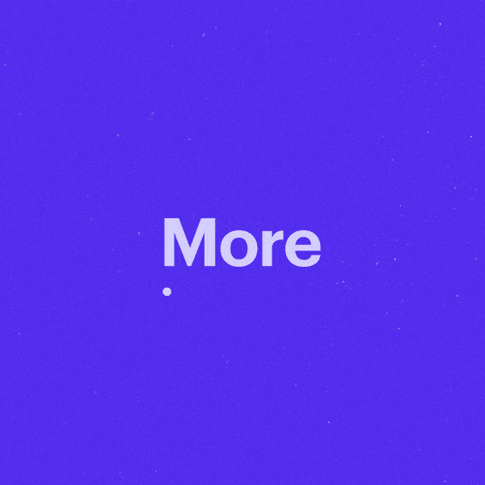

#Motion Design / 2020
Smithsonian Channel: Women Who Make America
#Branding / 2020
Expanding HCA Healthcare's Social Media Presence
#Data Viz / 2019
Visualizing the Opioid Crisis for Policy Makers

#Product Design / 2020
LYT: Long Distance Relationship App
#Art Direction / 2019
Beneath the Surface of Multiple Sclerosis

#Art Direction / 2021
eCommerce: Online Advertising Work

#Web Design / 2019
Superdry Retail Landing Page
